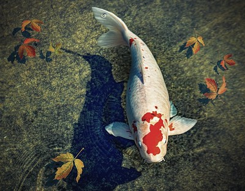

About
.jpg)
"Empowering the serenity of nature's beauty, our mission at the Florida Koi Sanctuary is to provide a haven for koi fish, fostering their health, happiness, and preservation. Through education, conservation, and community engagement, we strive to cultivate an oasis of tranquility, where these majestic creatures thrive and inspire harmony between humans and the natural world."
Read More |
What we do
"At the Florida Koi Fish Sanctuary, we are dedicated to nurturing and safeguarding the well-being of koi fish. Through compassionate care, specialized habitat management, and educational outreach, we strive to provide a sanctuary where koi thrive in a tranquil and natural environment. Our mission is to cultivate a deeper understanding and appreciation for these magnificent creatures while promoting their conservation and enriching the lives of all who visit."
Donate to help the Koi fish |
Meet the Koi

"At our sanctuary, each koi fish is a vibrant ambassador of its own unique story and personality. From the graceful elegance of our Kohaku to the mesmerizing patterns of our Showa, visitors are invited to immerse themselves in a kaleidoscope of colors and characters. Through guided encounters and educational programs, we aim to deepen appreciation for these living treasures, fostering connections that transcend mere observation to inspire stewardship and respect for the wonders of aquatic life."
Meet Our Koi |
More Info
"Delve deeper into the world of koi at our sanctuary with our comprehensive resources. Learn about koi varieties, habitat conservation, and responsible ownership through engaging workshops, guided tours, and interactive exhibits. Whether you're a seasoned enthusiast or new to the enchanting realm of koi keeping, our educational offerings provide valuable insights and practical knowledge to enhance your connection with these captivating aquatic companions."
Contact |